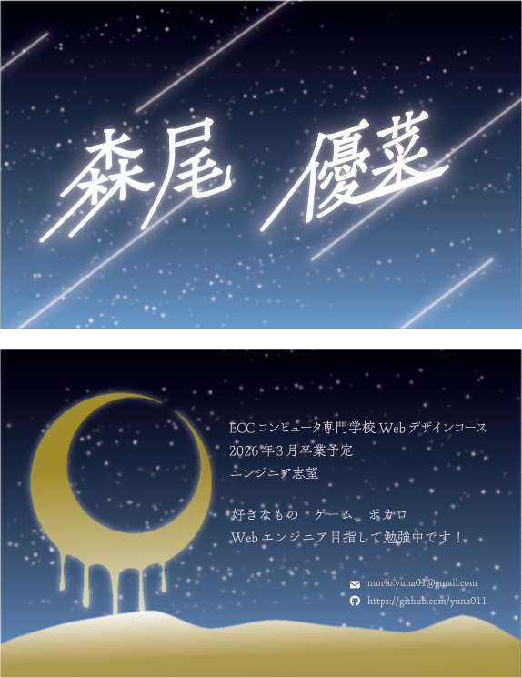
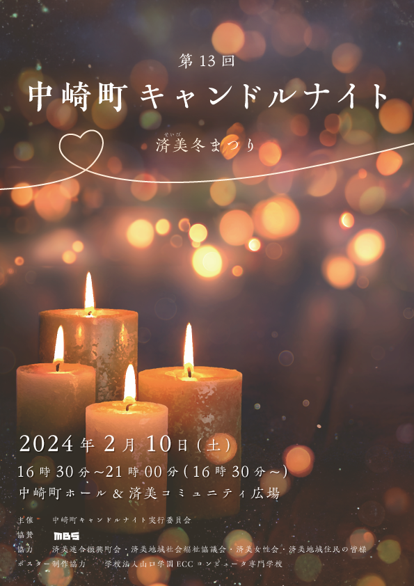

1年生前期に作成。(1年後期に色や裏面の内容など一部編集)
星空をイメージして自分の名刺を作成しました。
表面は背景の流れ星に合わせて、名前も流れ星ぽくなるように払いの部分を長くしました。
裏面は月がだんだんと溶け出し、下に溜まっていっているイメージで作成しました。
夜空になるよう暗くはしたいけれど、暗くなりすぎないようにかつ綺麗にグラデーションできるようにすることが難しかったです。
特に月の部分のグラデーションが難しかったです。垂れている月と貯まっている部分の境目あたりに白を入れてメリハリをつけました

中崎町キャンドルナイトポスター応募作品
キャンドルの温かみを表現できるようにオレンジ色を使いました
あおぞらカフェ
※架空のカフェです